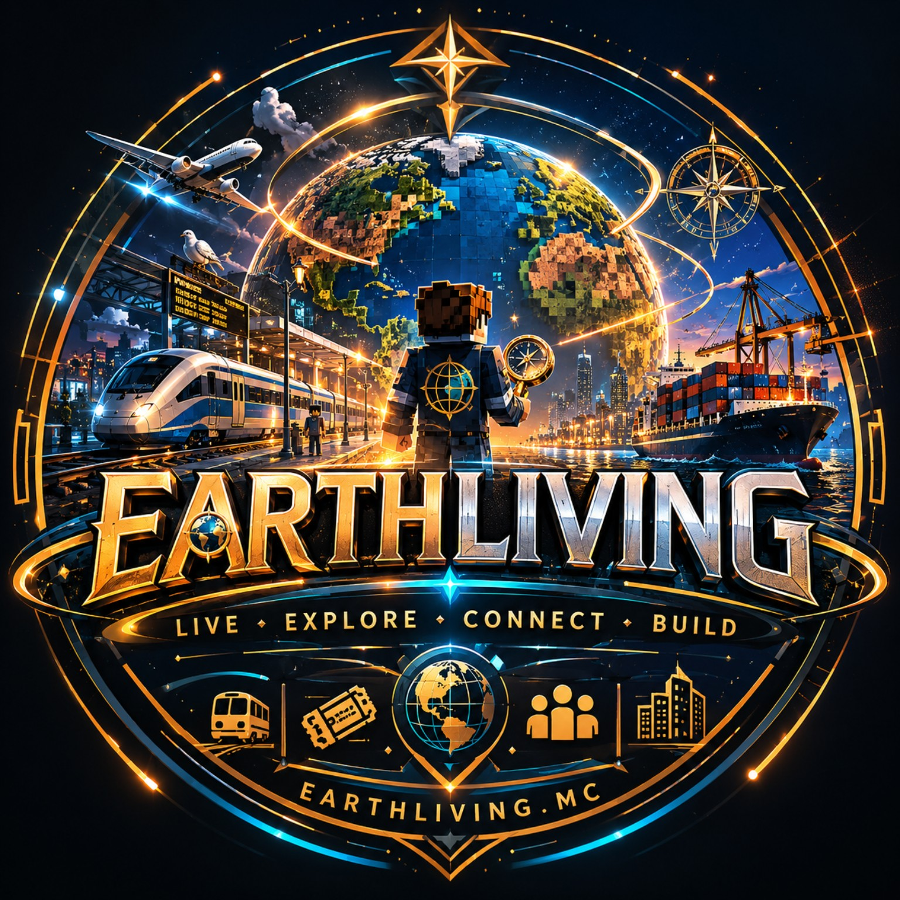

Build places that matter
Cities grow through player builds, transport networks, services, businesses, landmarks, nightlife, reports and long-term planning.

EarthLivingEarth-map MMO Minecraft server
earthliving.earth
A living civilization sandbox on an Earth map, built around EarthOS, transport, mining, reports, city growth, Discord integration, and long-term world simulation.
Overview
EarthLiving is not just survival with extra plugins. It is planned as a civilization-style Minecraft experience where cities, transport, mining, tourism, nightlife, companies, infrastructure, and player actions all connect together.
The ambition is to keep developing EarthLiving far beyond a normal Minecraft server. We want to keep expanding the world, systems, and player experience with a level of detail, persistence, and creativity rarely seen in community servers.
Cities grow through player builds, transport networks, services, businesses, landmarks, nightlife, reports and long-term planning.
EarthPulse is planned to connect tourism, mining, traffic, reputation, safety, economy and infrastructure into one world state.
The world uses Earth as a stage, while systems are tuned so players can enjoy the server without one perfect region dominating everything.
EarthOS
EarthLiving is designed to be GUI-first. Instead of memorizing long command lists, players use EarthOS from a hotbar device to access the server’s systems.
EarthOS is planned to include transport, maps, economy, reports, mining, nightlife, news, passport, language settings, and server status.
Normal players should interact through menus, tickets, apps, dashboards, buttons, and visual feedback instead of command spam.
New players will be able to choose their language on first join, with later changes available through EarthOS settings.
Current build direction
GitHub and Notion agree on the same direction: finish the core, keep gameplay GUI-first through EarthOS, then add living-world systems one layer at a time.
Keep the core as the backend for reports, events, Discord, EarthOS and future modules.
Turn the hotbar device into the normal player interface for reports, map, server status and apps.
Make reports traceable across Minecraft, panel, staff flow, GitHub and later AI-assisted fixes.
Start the region score engine that makes cities and systems feel connected.
Main systems
Trains, metros, ships, airports, stations, tickets, and logistics are planned as core parts of the world, not just teleport menus.
Mining uses realistic-inspired resource regions, licenses, deposits, depletion, and logistics while keeping gameplay fair.
Players may later operate mines, shops, hotels, clubs, factories, transport companies, airlines, and logistics networks.
Tourism responds to landmarks, transport, safety, culture, events, bars, clubs, DJs, and dancing NPCs in city nightlife areas.
A region can become known for technology, tourism, mining, logistics, culture, business, or public transport.
Planned AI tools may help analyze reports, suggest city upgrades, detect infrastructure problems, and support development workflows.
Roadmap
EarthLiving is being built step by step, starting with the core server foundation, EarthOS, reporting, world simulation planning, transport, mining, and long-term MMO-style systems.
This is intended to be a long-term project, not a one-time launch. The server will continue to evolve with new systems, deeper mechanics, better tools, and ongoing improvements shaped by the world and its players.
Current phase: foundation, website, EarthOS concept, report flow, branding and core planning. Progress is an early estimate and will change as systems move from planning into development.
Community
Public access is not open yet. The goal right now is to share clear progress, keep the roadmap visible, and build the server properly before wider testing.